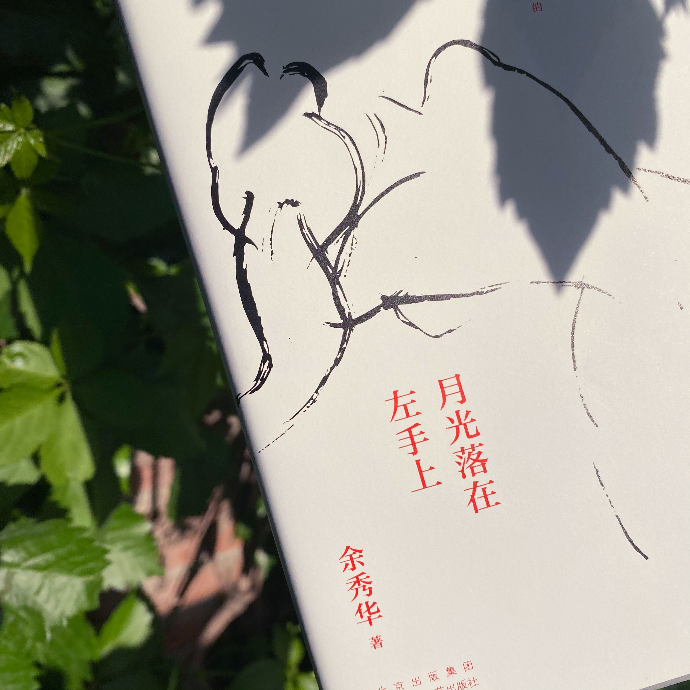
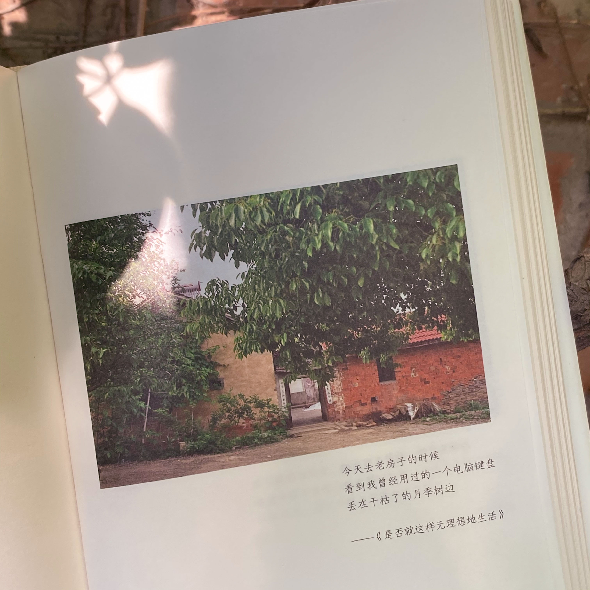
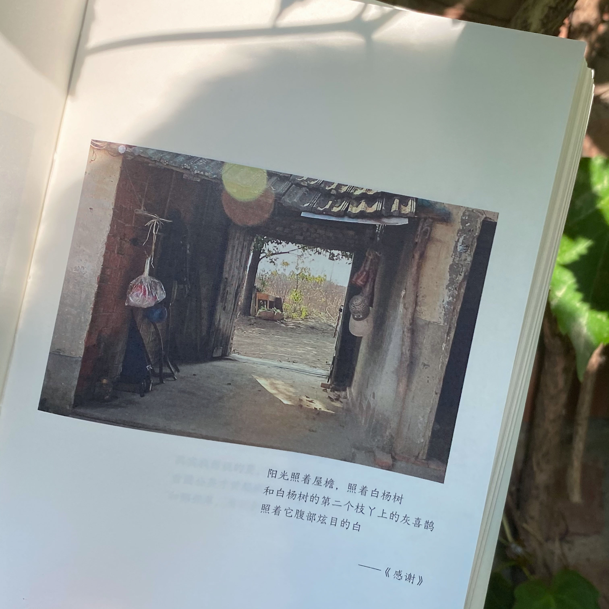
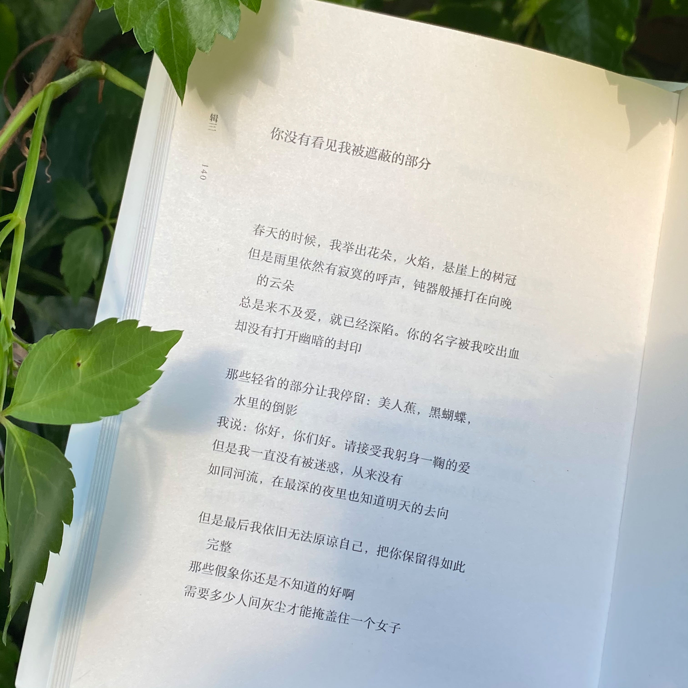
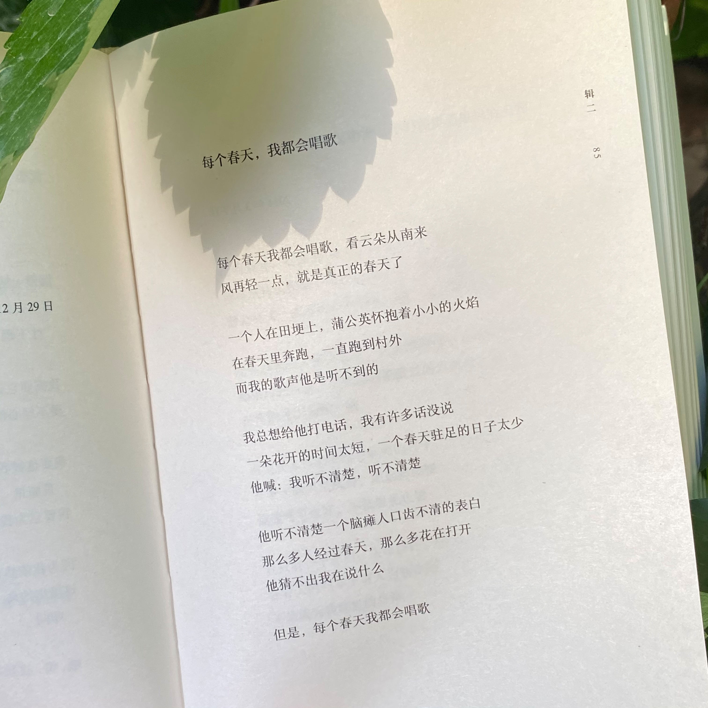
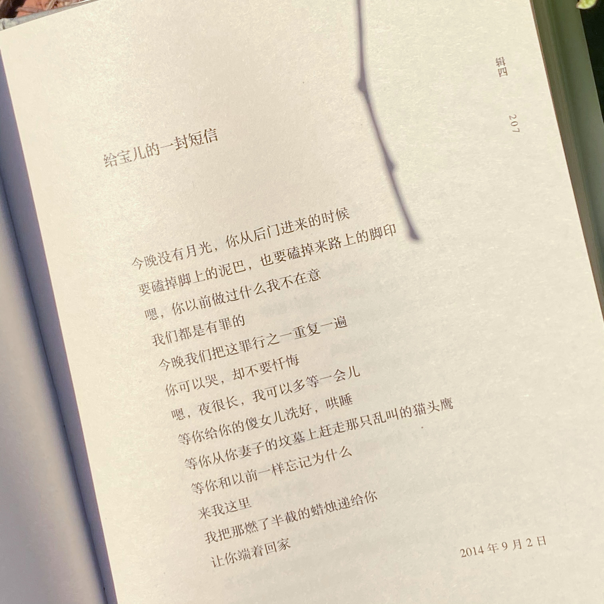
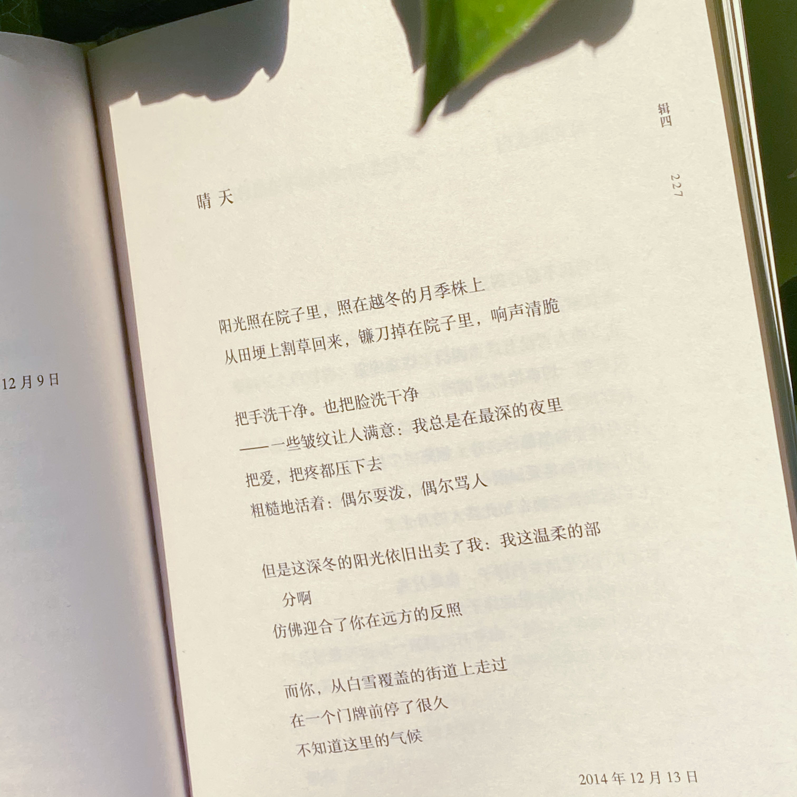
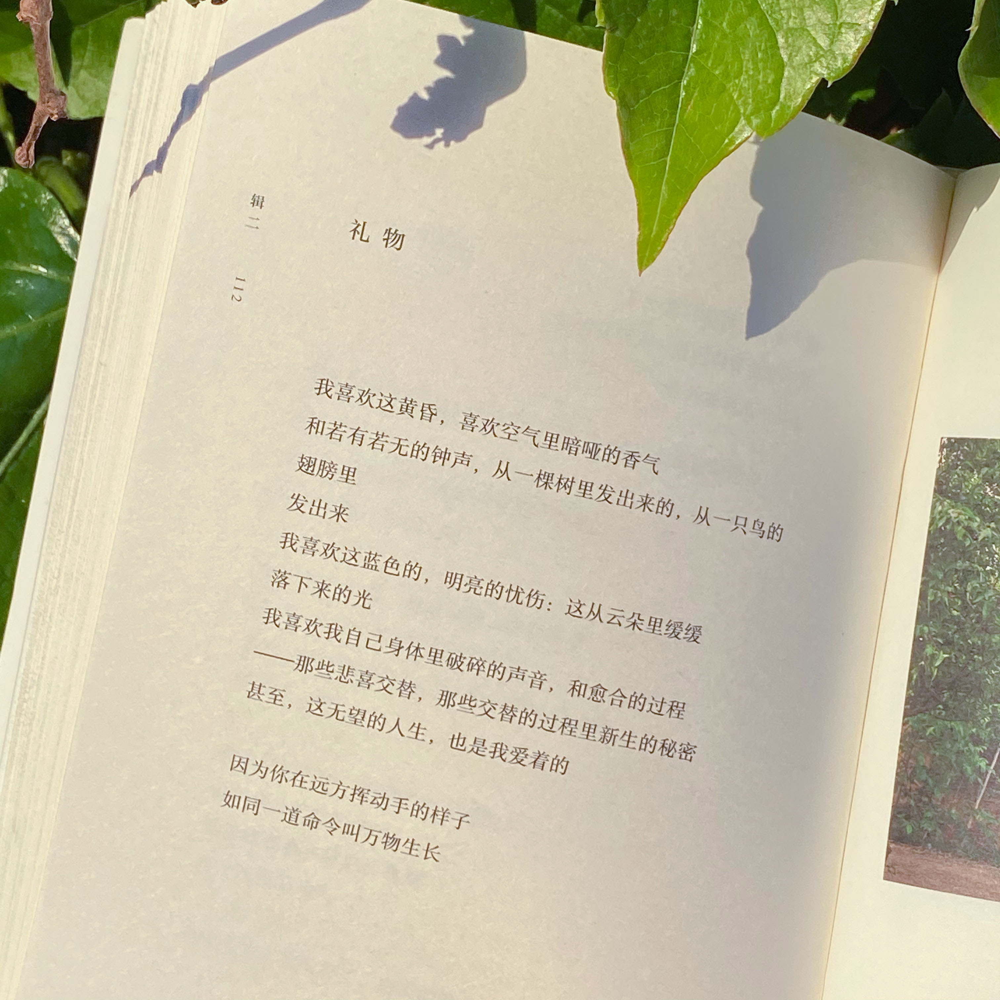

我们还有诗歌
poemsforyou
余秀华

《月光落在左手上》封面

《月光落在左手上》插图1

《月光落在左手上》插图2

你没有看见我被遮蔽的部分

每个春天，我都会唱歌

给宝儿的一封短信

晴天

礼物
余秀华，1976年生于湖北省钟祥市石牌镇横店村，诗人。
余秀华因出生时倒产、缺氧而造成脑瘫，使其行动不便，说起话来口齿不清。高中毕业后，余秀华赋闲在家；2009年，余秀华正式开始写诗；2014年11月，《诗刊》发表其诗作；2015年1月，广西师范大学出版社为其出版诗集《月光落在左手上》；同年2月，湖南文艺出版社为其出版诗集《摇摇晃晃的人间》。2015年1月28日，余秀华当选湖北省钟祥市作家协会副主席。2016年5月15日，余秀华的第三本诗集《我们爱过又忘记》在北京单向空间首发。2018年6月，出版散文集《无端欢喜》。
2016年11月1日，在湘阴县举行的我国第三届“农民文学奖”颁奖典礼上，余秀华获得了“农民文学奖”特别奖，并获得了10万元奖金和诗一样的颁奖词。截至2015年1月，余秀华已写了2000多首诗。
2018年12月6日，诗歌集《摇摇晃晃的人间》获第七届湖北文学奖。2019年1月，推出首部自传体小说集《且在人间》。